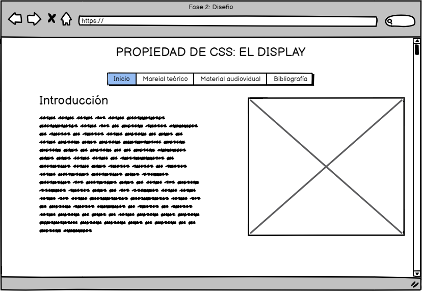

PROPIEDAD BÁSICA DE CSS: DISPLAY
OBJETIVOS DEL SITIO
Objetivo general
La razón principal de éste sitio es la de realizar satisfactoriamente
la actividad fase 2, del curso denominado "Diseño de páginas web".
Para ello, resolveremos la temática que trata sobre la propiedad básica
de css llamada Display .
Objetivos específicos
- Aprender el concepto y uso de la propiedad llamada Display, que es usada en css.
- Mostrar el diseño del sitio web.
- Mejorar mis conocimientos en el diseño y creación de páginas web
MATERIALES
Material teórico
- w3.unpocodetodo.info.Entender la propiedad display.
tomado de:
w3.unpocodetodo
Material audiovisual
- Imagen de la portada de video. JL Web. Guía sobre display en css. Tomado de:
Imagen
- José M Alarcón. campusMVP.es. 2018-marzo-23. Propiedad CSS display - Entendiendo los modos de visualización de elementos en CSS [archivo de video].
Recuperado de:
Archivo de video
CONTENIDO
Introducción
Éste material está enfocado en estudiar una de las propiedades básicas más comunes en CSS.
Me refiero a una llamada Display. Encontrarás información sobre su siginificado, y cómo usarlo;
también encuentras material audiovisual que te puede ayudar a entender de mejor manera el tema.
puedes usar el menú de arriba para acceder a la información.
MOCKUP O MAQUETACIÓN DEL SITIO

{kind=link}